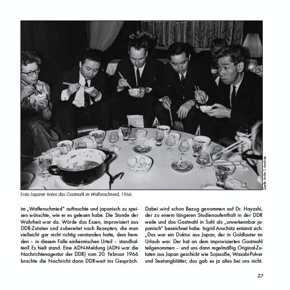
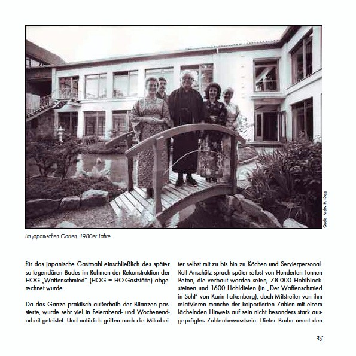

Kleine Suhler Reihe Nr. 38, Stadtverwaltung Suhl 2012
Und was war nun das Besondere am japanischen Gastmahl in Suhl, das bis heute allen, die es erlebt haben, ein Lächeln in die Augen tritt?

Das Entscheidende war wohl wirklich das Heraustreten aus dem Alltag. Wer das Glück hatte, gleich zu Anfang baden zu können (bei den parallel laufenden Gastmahlen wurde das Bad bei der zweiten Gruppe dann inmitten der Essensgänge zelebriert), legte praktisch schon beim Gastmahl-Start mit der Kleidung den Alltag ab. Als erstes gingen die Frauen der Gruppe ins Wasser. Um dem Interessenten von heute eine Vorstellung davon zu geben: man saß in dem Becken. Das Wasser stand einem daher wörtlich bis zum Halse. Die Damen studierten als erstes ein Lied ein, um ihre Männer gebührend empfangen zu können. Viele erinnern sich, dass „Horch, was kommt von draußen rein" ein beliebtes Lied dafür war. Und was kam von draußen rein? Die Männer der Gruppe, ebenfalls nackt. Diese stimmten dann in den Gesang ein. Im Wasser wurde japanischer Pflaumenwein bzw. später auch Cocktails gereicht, weiter gesungen und ein paar Fußspiele mit dem gegenüber sitzenden Partner veranstaltet. Der Wein tat seine Wirkung.
Jeder bekam dann seinen Kimono, den er über die Unterwäsche zog und ging an Körper und Geist gereinigt zum Gastmahl. Im Gastmahlraum, der ganz nach japanischem Vorbild gestaltet war, gab es dann vielfältige Erläuterungen nicht nur zu den Speisen selbst, sondern auch zu Sitten und Bräuchen im fernen Osten – und garantiert viel Spaß, denn die meisten hatten zuvor noch nie mit Stäbchen gegessen. Die Menüs umfassten mindestens sieben Gänge. Da galt es etwa Algen zu kosten, hauchdünn geschnittene Scheiben Fleisch und rohen Fisch, eben Sushi in Suhl. Und am Ende verließen die Gäste das Japanrestaurant mit dem Gefühl, etwas Einmaliges, ein Stück „echtes" Japan erlebt zu haben.